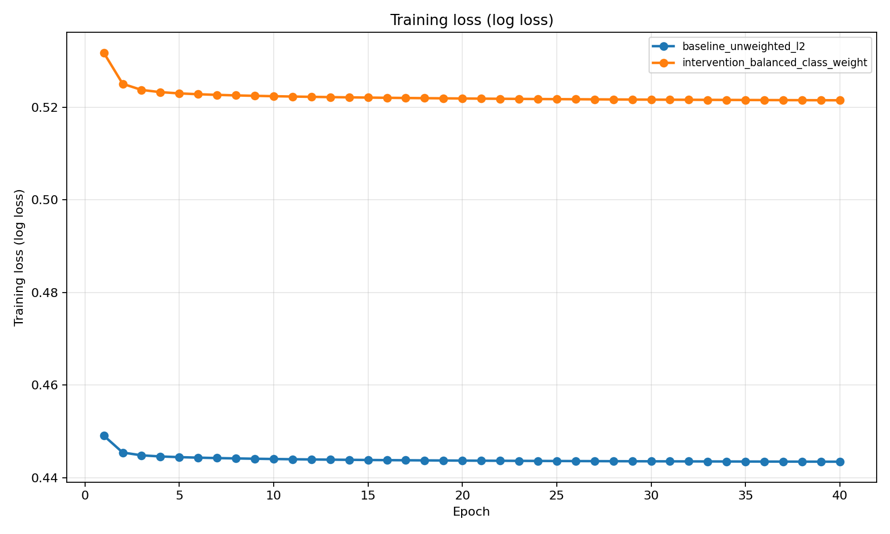
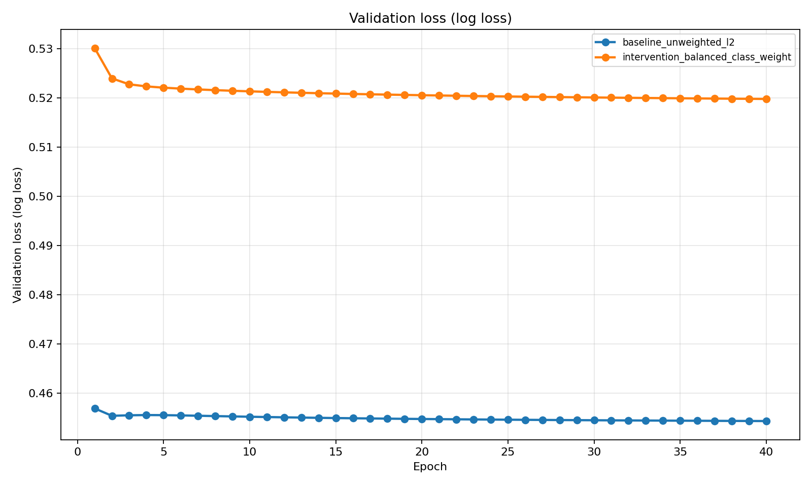
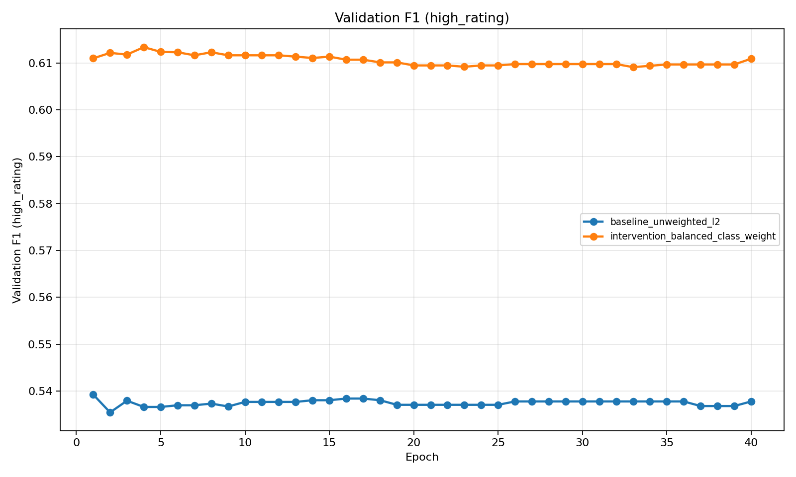
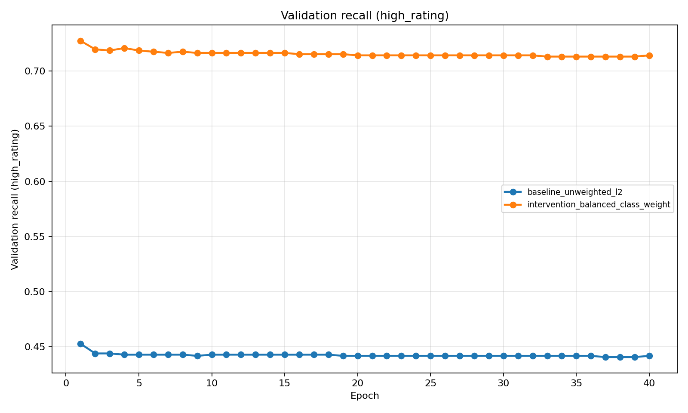

Name: Brandon Jackson
Semester: Summer 2026
Course: Deep Learning (CS 6320)
Work type: Portfolio baseline evaluation (not approved practice work).
| Item | Lock |
|---|---|
| Dataset | Kaggle Board Games Database from BoardGameGeek
(games.csv, 21,925 rated games) |
| Unit | One row per game (BGGId) |
| Target | high_rating = 1 if AvgRating >= 7.0,
else 0 (~26.9% positive) |
| Stakeholder use | Pre-release / preorder stocking screen for a hobby retailer |
| Model evaluated | Logistic regression (SGDClassifier,
log-loss, L2) — Assignment 4 baseline stage |
| Primary intervention | Balanced class weights via
sample_weight (addresses minority-class recall) |
| Seed | 6320 |
| Implementation | 6320-hw5/scripts/; end-to-end:
bash run_local.sh |
Features follow the locked Assignment 4 charter: numeric design
metadata, GameWeight, category flags, simple text-length
features, parsed goodplayers_count. Hard-excluded rating
fields, rank columns, popularity counts, and mis-timed demand fields
(NumOwned, NumWant, NumWish).
Strategy: stratified random 70% / 15% / 15% hold-out
by game row (each row is one game — no duplicate entities across
splits). Seed 6320. Model selection uses
validation; test is held out for a
final check only.
Why appropriate: Matches the charter’s hold-out-by-game plan for a static snapshot where each game appears once. Stratification preserves ~27% positive rate in each split.
Limitation: Random stratified split does
not simulate the charter’s pre-release prediction
moment; a time-based split by
YearPublished remains a Week 5+ follow-up.
| Split | Rows | % of data | Positive rate |
|---|---|---|---|
| train | 15,347 | 70.0% | 26.9% |
| validation | 3,289 | 15.0% | 27.7% |
| test | 3,289 | 15.0% | 26.2% |
Plausibility check: positive rates are stable across
splits (within ~1.5 pp), so the stratified partition did not collapse
class balance. Numeric metadata distributions by split are saved in
prep/bgg_split/split_audit/split_numeric_distributions.csv
(e.g. YearPublished, GameWeight means are
comparable across train/validation/test).
Run evidence:
python3 scripts/prepare_bgg_data.py;
python3 scripts/run_split_audit.py; artifacts under
prep/bgg_split/.
Majority-class baseline (always predict not-high):
validation accuracy 72.3%, F1 0.0,
recall 0.0 on high_rating=1.
| Run | Split | Accuracy | Precision (pos) | Recall (pos) | F1 (pos) | ROC-AUC |
|---|---|---|---|---|---|---|
| Baseline (unweighted) | validation | 0.790 | 0.687 | 0.442 | 0.538 | 0.814 |
| Baseline (unweighted) | test | 0.803 | 0.678 | 0.473 | 0.557 | 0.831 |
| Intervention (balanced weights) | validation | 0.748 | 0.534 | 0.714 | 0.611 | 0.815 |
| Intervention (balanced weights) | test | 0.762 | 0.532 | 0.753 | 0.624 | 0.832 |
The baseline beats the majority class on F1 and ROC-AUC but under-recalls high-rated games. The intervention trades some accuracy/precision for much better minority recall while holding ROC-AUC flat.




Figures 1–4: Baseline vs balanced-weight intervention; 40 SGD epochs, learning rate 0.001.
Generalization diagnosis: Train and validation loss/F1 track closely for both runs (no large train–val divergence). Evidence suggests plausible generalization at this capacity, not severe overfitting. The main failure mode is class imbalance handling, not runaway train fit: baseline validation recall stays ~0.44 while accuracy looks acceptable.
| Report field | Content |
|---|---|
| Observed issue | Unweighted baseline favors the majority class — high
accuracy (79%) but low recall (44%) on
high_rating=1, poor retailer utility for “don’t miss
hits.” |
| Expected test | Balanced class weights should raise recall/F1 on the minority class without requiring a new architecture. |
| Intervention | Same features and L2 (alpha=1e-4); apply
compute_class_weight('balanced') through
sample_weight on training only. |
| Before (validation) | F1 0.538, recall 0.442, precision 0.687 |
| After (validation) | F1 0.611, recall 0.714, precision 0.534 |
| What changed | Better minority detection; lower precision and accuracy — expected trade-off for imbalance. ROC-AUC unchanged (~0.815). |
| Limitation | Single linear baseline; no time-split; calibration still poor (below). |
Confusion matrix (validation):
| Pred 0 | Pred 1 | |
|---|---|---|
| True 0 | 1,811 | 568 |
| True 1 | 260 | 650 |
Slice — GameWeight (complexity):
| Bin | n | Positive rate | F1 (high_rating) | Recall (high_rating) |
|---|---|---|---|---|
| light (<2) | 1,698 | 11.8% | 0.31 | 0.28 |
| medium | 1,134 | 36.2% | 0.58 | 0.73 |
| heavy | 392 | 63.5% | 0.78 | 0.98 |
| very heavy | 65 | 78.5% | 0.88 | 1.00 |
Interpretation: The model works best on heavier games where the positive class is more common; light games remain hard — consistent with weak metadata signal and representativeness limits in the charter.
Year-level slices
(outputs/error_analysis/slice_by_year.csv) show small-n
bins; several older/low-count years have unstable precision.
High-confidence errors (confidence >= 0.8 and wrong):
saved in
outputs/error_analysis/high_confidence_errors.csv.
Calibration is meaningful for this binary screening task (probabilities drive stock/skip thresholds).
Decile reliability bins
(outputs/error_analysis/calibration_bins.csv) show
systematic overconfidence: predicted probabilities
exceed observed positive rates in most bins (e.g. mean predicted
0.52 vs observed 0.30 in the 0.47–0.58
bin; gap up to ~0.22 in mid bins). The balanced-weight model improves
recall but does not yet produce trustworthy probability
estimates for deployment thresholds.
bash run_local.sh from repo root6320-hw2/part_b/data/bgg/games.csv (or
GAMES_CSV)prep/bgg_split/manifest.json,
outputs/*/history.csv, outputs/plots/*.png,
outputs/error_analysis/*.csv| A4 risk / success criterion | Week 5 evidence | Status |
|---|---|---|
| Class imbalance (~27% positive) — report F1/recall, not accuracy alone | Majority F1=0; baseline acc 79% but recall 44%; intervention recall 71% val / 75% test | Confirmed — imbalance distorts accuracy; weighting helps recall |
| Leakage / feature timing — exclude rating & mis-timed demand fields | Manifest lists exclusions; model uses design metadata only | Partially tested — exclusions enforced in prep; time-stamp audit not yet done |
| Representativeness — BGG enthusiast bias; not universal quality | Slices show weak performance on light games and sparse year bins | Confirmed risk in practice |
| Success: classical baseline beats majority | ROC-AUC ~0.81 vs 0.5; F1 > 0 vs 0 | Met |
| Honest hold-out evaluation | Stratified split audit; test metrics reported once | Met for random split; time-split still open |
| Responsible use — screening aid, human review | Calibration gaps + slice weakness argue against automated decisions | Reinforced |
Supported now: A leakage-aware tabular baseline can rank games better than chance (ROC-AUC ~0.83 test) and better than always predicting “not high.” Balanced weighting improves minority recall for a “don’t miss hits” retailer story. Train/validation curves do not show runaway overfitting at this model size.
Not supported: Deployment-ready stocking decisions. Probability outputs are miscalibrated; light-weight games are poorly served; random split does not prove pre-release generalization; no mechanics join beyond category flags yet; no human-in-the-loop workflow tested.
Recommendation: Use for internal screening only — flag titles for human review, not auto stock/skip. Prefer intervention weights when recall matters more than precision; do not trust raw probability thresholds until recalibration.
| Stage | Next step | Why |
|---|---|---|
| Baseline | Done — majority + logistic with imbalance diagnosis | Establishes floor and metric story |
| Initial candidate | Gradient-boosted trees on same feature manifest | Capture nonlinear metadata/category interactions |
| Revised alternative | Recalibrated probabilities or simpler logistic if trees overfit | Address calibration gap |
| Final evidence | Time-split + stakeholder cost matrix (false stock vs false skip) | Tie metrics to retailer decision |
Tool: Cursor (Composer)
AI-assisted: Repo scaffolding, sklearn training/evaluation scripts, Week 5 example patterns, first-draft writeup prose.
My work: Locked portfolio path (no TLC practice); chose balanced-weight intervention from baseline recall failure; ran and verified all local metrics, slices, and calibration tables against saved outputs.
Certification: I certify that all work not described above is my own, and I verified AI-generated content for accuracy.